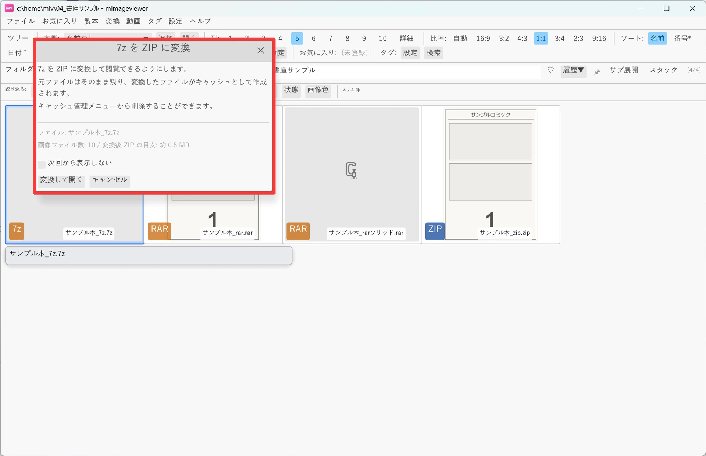
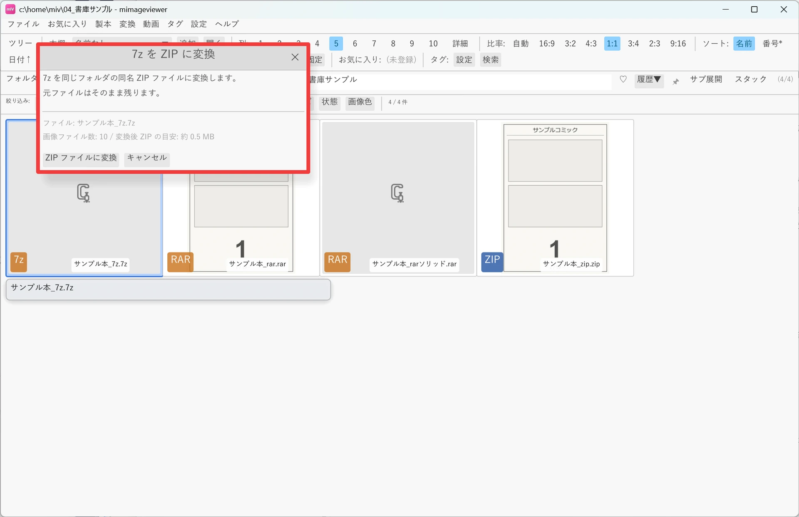
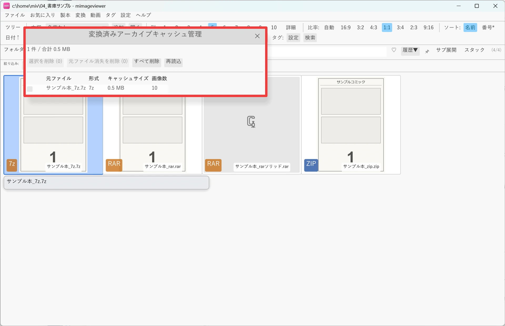

アーカイブを開く（必要に応じて ZIP へ変換）
ZIP / CBZ はそのまま開け、条件を満たす RAR / CBR も直接閲覧できます。 それ以外の RAR / CBR と 7z / LZH は、一度 ZIP へ変換してから閲覧します。 変換の始め方とキャッシュの扱いを押さえておくと、次回以降つまずきません。
ZIP / CBZ はそのまま開ける
.zip と .cbz は変換不要です。ファイルをダブルクリックすると、
展開せずにその場でアーカイブ内の画像が一覧表示されます。中にサブフォルダや別の ZIP が
入っている場合は、それぞれを「開いて中に入れるフォルダ」としてツリー状に表示します。
ZIP の外に出るには BS（Backspace）キーを押します。
RAR / 7z / LZH の開き方
.rar / .cbr のうち、ソリッド圧縮でなく・入れ子アーカイブを含まず・パスワードなしのものは、変換せずそのまま直接閲覧できます。
それ以外の RAR / CBR（ソリッド圧縮・入れ子あり・パスワード付き）と、.7z / .cb7 / .lzh / .lha は、
ZIP のように直接ブラウズできないため、一度 ZIP に変換してから閲覧する方式になります。
対象のファイルをダブルクリックすると変換が始まります（元ファイルはそのまま残ります）。
- 変換は初回だけで、2 回目以降は変換済みの ZIP キャッシュから高速に開きます。
- 変換時に画像ファイルのみを取り出し、音声・動画・テキストなど画像以外は破棄されます。
- パスワード付きの RAR / CBR では、変換前にパスワード入力ダイアログが表示されます。パスワード自体は保存されません。
変換には 2 つの方法があります
変換が必要なアーカイブ（ソリッド RAR・7z・LZH など）を ZIP へ変換する方法は 2 通りあります。用途に合わせて好きな方を選べます。
- 方法 1 — その場で開く（変換キャッシュ）：ダブルクリックすると、自動で変換キャッシュを作ってすぐ閲覧できます。変換結果はアプリを終了しても保持され、次回から高速に開けます。不要になったら管理ダイアログから削除できます。
- 方法 2 — ZIP ファイルとして残す：メニュー「変換」→「ZIP ファイルに変換」で、元と同じ場所に本物の
.zipを作ります。変換キャッシュを作りたくない人や、変換済み ZIP をそのまま保管・持ち運びしたい人向けです。
方法 1: その場で開く（変換キャッシュ）
対象のファイルをダブルクリックすると変換が始まります。変換前にダイアログで確認するか、確認せず自動で変換するかは環境設定で選べます（環境設定 → パフォーマンス → キャッシュ）。
- 開く前に確認する（既定）：ダブルクリックすると確認ダイアログが表示され、変換を実行するか選べます。「次回から表示しない」を選ぶと、以降は確認せず自動で変換する設定に切り替わります。
- 確認せずに変換する：ダブルクリックした瞬間に変換が始まります。
- RAR / 7z / LZH を無視する：これらの形式が一覧やフォルダ移動の対象から外れ（サムネイル一覧にも表示されません）、作成済みの変換キャッシュも開かなくなります。
変換中は進捗が表示されます。

方法 2: ZIP ファイルとして残す
グリッドのカーソル位置で対象を指定し、メニュー「変換」→「ZIP ファイルに変換」を実行すると、元ファイルと同じフォルダに同名の .zip を作成します。
こちらは変換キャッシュではなく通常のファイル出力なので、キャッシュを溜めたくないときや、変換結果を ZIP として手元に残したいときに向いています。
Space キーで複数をチェックすれば、まとめて変換することもできます。
- 中の画像は再圧縮せずそのまま格納するので、無劣化・高速です。
- 同名の ZIP が既にある場合は、そのファイルの変換をスキップして上書きしません。

.zip ファイルとして残せます。変換済みアーカイブのキャッシュ管理
ダブルクリックによる変換で作られる ZIP キャッシュは、データ保存先の archive_cache に保存され、アプリを終了しても保持されます。
一覧の確認や削除は「設定 → 変換済みアーカイブキャッシュ管理…」から行います。
- 変換済みキャッシュの一覧と合計サイズを表示
- チェックボックスで個別にチェックして削除
- 元ファイルが既に存在しないエントリを一括削除
- 全キャッシュの削除
環境設定 → パフォーマンス → キャッシュで、容量上限（MB 単位）を設定すると、変換完了後に古いキャッシュから 自動的に削除されます。既定は無制限です。

変換後の再読み込み
一度変換されたアーカイブは、以降は通常の ZIP と同じ扱いになります。フォルダに戻ると変換済みのアーカイブとして サムネイルが表示され、開くと変換済みキャッシュから高速に読み込まれます。
「同名の ZIP/CBZ と RAR/7z/LZH がある場合、ZIP/CBZ だけ表示」を有効にしている環境設定では、 一覧には変換後の ZIP だけが表示されます。元のアーカイブから読み直したい・再変換したい場合は、 この設定を一時的に OFF にして元ファイルへカーソルを合わせてください。